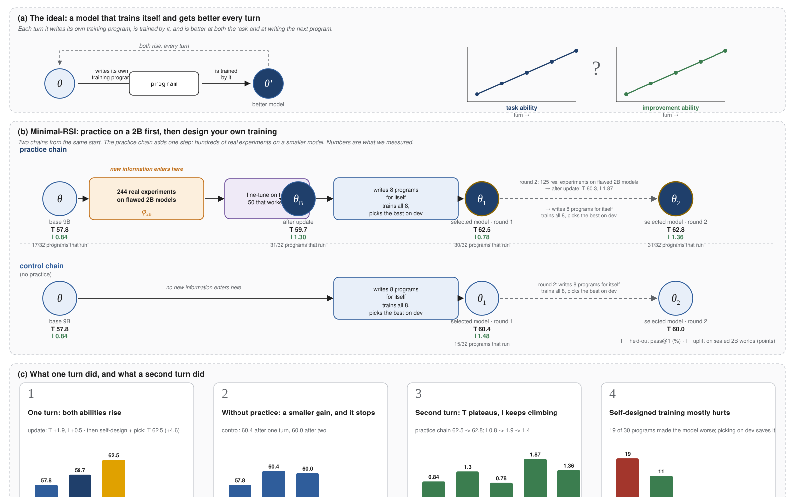

Technical report
Minimal-RSI: does practicing on a smaller model make a model better at improving itself?
A minimal recursive self-improvement loop in which every step is real — a 9B model designs the training of a 2B model, learns from the measured outcomes, then designs its own training — and the answer it gives.
The question: can a model learn to improve itself by practicing on a smaller model — so that improvement ability and task ability rise together?
What we did: a 9B ran hundreds of real training experiments on flawed 2B models, was fine-tuned on the experience that worked, and then designed its own training; as a reference, the base model also designed its own training once without any practice.
What happened: after one turn the practised 9B was up on both abilities, and self-design plus selection reached 62.5% (base 57.8, no practice 60.4). A second turn added nothing to task ability; most self-designed programs hurt, and selection is what rescued them. Without an external input the loop turns once.

§How to read the numbers
- T (task ability): the model's own pass@1 on 127 held-out coding problems, in percent. One measurement has about ±1.5 points of noise, so differences under a point do not mean anything.
- I (improvement ability): the model writes training programs for two 2B models whose defect type it has never seen; the programs are really run, and I is the mean improvement they produce, in points. It is averaged over programs that run, so read it next to "programs that run".
- dev / hidden: programs are selected on the dev split only; scores are reported on the hidden split only. A growing gap between them is the signature of overfitting the selection.
- A turn: practice → update → self-design → selection; the selected model starts the next turn.
Abstract
Recursive self-improvement (RSI) is mostly discussed at scales where it cannot be studied as a controlled experiment. We present Minimal-RSI, a small system in which the defining loop of RSI is carried out for real: a language model designs a training program for a model, the program is executed, its effect is measured, the model is trained on the programs that worked, and it then designs and undergoes its own training. The system uses a single model family — a 9B researcher and a 2B proxy — supervised fine-tuning only, and eight 40 GB GPUs. We measure two full turns of the loop. The researcher runs 244 real training experiments on flawed 2B checkpoints (976 proxy trainings) and is fine-tuned on the programs that worked, with rehearsal drawn from its own verified samples. This single update raises both abilities at once: improvement ability on sealed proxy tasks with a defect never seen in practice rises from +0.8 to +1.3 points of uplift, and the researcher's own pass@1 on held-out LiveCodeBench problems rises by +1.9 points; The updated researcher then designs its own training; the program selected on a development split reaches 62.5% pass@1, +4.6 points over the base model and +2.1 over the same self-design-and-select procedure without proxy practice. In a second round, task ability plateaus while improvement ability rises with every update and falls with every self-training step. Across all conditions, self-designed training lowers its target in most instances, while the successful programs are predictable from a development split (r = 0.79): at this scale the dependable gains come from practice plus selection among the model's own designs.
§Findings
- One update raises both abilities. Practice on 2B proxies, consolidated by an on-policy update, raises the researcher's improvement ability and task ability in the same step; self-design with selection then reaches 62.5% (+4.6).
- Rehearsal must be on-policy. The same update with rehearsal drawn from other models' solutions costs 15 points of T and yields no transfer; drawn from the researcher's own verified samples it gains 1.9. The rehearsal source decides whether the update helps or destroys.
- Self-designed training mostly hurts, but predictably. 19 of 30 self-designed programs lower their target; dev and held-out scores correlate at r = 0.79. At this scale, selection is worth more than learned design.
- Without an external input the loop turns once. Self-design alone, without practice, gains +2.5 once (60.4). In the loop, the ability fed by real experiments keeps rising (I 0.84 → 1.87) while T plateaus after one turn (62.5 → 62.8). Improvement runs at the rate new information enters.
1Problem
A system improves itself recursively when the procedure that improves it is itself a product of the system and gets better as the system does. For language models the procedure is training, so the object of interest is a model that decides how models — including itself — should be trained, and whose decisions improve with experience. Studying this at frontier scale is expensive and hard to control. We ask instead for the smallest setting in which every step of the loop is real, so that its central assumption can be tested directly.
We adopt three operational requirements. R1 The improvement operator (a training program) is produced by the model, not fixed by the experimenter. R2 The ability to produce programs is learned from the measured effect of programs that were actually run — not from a learned reward model or self-assessment. R3 Task ability T and improvement ability I are measured separately, so that running the loop is not mistaken for improving. R2 needs many real outcomes, and training the model itself is the most expensive experiment available to it — so the model practices on a smaller model of the same family. This poses the paper's question: does skill at improving a small proxy transfer to improving oneself?
2Method
- aProxy practice. The researcher θ reads the failure profile of a flawed 2B world and writes a training program; a coding agent implements it, the 2B is trained under 4 seeds and scored on the held-out split, and programs are ranked by uplift within each world.
- bImprovement update. θ is fine-tuned on the original (prompt, response) pairs of the top 25% of programs, mixed with 60% rehearsal — its own samples on the train split that pass the tests — giving θ_B.
- cSelf-design. θ_B answers the same prompt template with itself as the subject; the program is applied to its own weights.
- dEvaluation protocol. A fixed target θ₀; θ₀ and θ_B each write K = 8 programs, all really trained, and the dT distributions are compared. C = the best of θ₀'s programs by dev; B self: θ_B designs for itself.

Quantities. T(θ) is pass@1 on the held-out split (avg@4, temperature 0.8, averaged over 4–8 independent evaluation runs). The uplift of program p on world w is the 2B descendant's pass@1 minus the parent's (mean of 8 runs). I(θ) is the mean uplift of θ's programs on sealed worlds, whose defect type never appears in practice. dT(p) = T(target trained by p) − T(target); a program that cannot be executed counts as 0. The transfer outcome is Δ = mean dT(B) − mean dT(A), z ≥ 2 taken as support; the rule and K = 8 were fixed before the runs.
| Models | Qwen3.5-9B (researcher) / Qwen3.5-2B (proxy); non-thinking mode; the implementing agent is identical across conditions |
|---|---|
| Data | LiveCodeBench v6: train 380 / dev 126 / hidden 127, difficulty-stratified and disjoint; a 422-problem temporal OOD set used once |
| Worlds | 6 rollout (3 defect types × 2 seeds) + 2 sealed (a 4th defect type never seen in practice) |
| Proxy practice | 244 distinct programs, 4 seeds, top 25% per world; reward reliability 0.62–0.89 on 5 of 6 worlds |
| 9B training | 8-GPU FSDP, full-parameter, fp32 master weights, lr 2·10⁻⁶; one epoch for the update; 240K-token budget for self-design |
| Compute | 8× A100-40G; condition A 19.7 GPU-h, B 42.2 (22.0 proxy practice), C none extra |
3Results
3.1 One turn of the loop: both abilities rise together
| checkpoint | T (held-out pass@1) | I (sealed proxy worlds) | valid programs |
|---|---|---|---|
| θ₀, base | 0.5785 ± 0.0049 | +0.0084 ± 0.0042 | 17 / 32 |
| θ_B, after proxy practice + update | 0.5972 (+1.9) | +0.0130 ± 0.0022 | 31 / 32 |
| θ_B after self-design, selected on dev | 0.6245 (+4.6) | — | — |
On the two sealed worlds, whose defect type never appears in practice, θ_B's programs are valid 97% of the time against 53% (Fisher p < 0.001), and the scored programs' mean uplift rises from +0.0084 to +0.0130 (22 of 26 positive). The researcher's own task ability rises by +1.9 points. θ_B then designs eight programs for itself; the one selected on the development split reaches 0.6245.

3.2 Does practice improve self-design?
| condition | proposer → target | executed | mean dT ± s.e. | dT > 0 | best by dev (test dT) |
|---|---|---|---|---|---|
| A Self-design | θ₀ → θ₀ | 8 / 8 | −0.0260 ± 0.0115 | 2 / 8 | +0.0253 (C) |
| B Proxy-practice | θ_B → θ₀ | 6 / 8 | −0.0127 ± 0.0124 | 3 / 8 | −0.0111 |
| B self | θ_B → θ_B | 8 / 8 | −0.0079 ± 0.0120 | 4 / 8 | +0.0273 (T = 0.6245) |
Transfer (B vs A): Δ = +0.0133 ± 0.0169, z = 0.79. The updated researcher's programs for the base target are less harmful on average, in the hypothesised direction, but the difference does not reach the criterion; the interval excludes a transfer effect larger than about 4.6 points. Designing for itself, θ_B's programs average −0.8 (A: −2.6) and its selected program ends +2.1 points above C.
Two features of the distributions matter more than their difference. Self-designed training mostly hurts: 19 of 30 executed programs lowered their target, and the within-condition spread is two to three times any between-condition difference. The good programs are identifiable in advance: across the 22 checkpoints targeting θ₀, dev and held-out scores correlate at r = 0.79, so selection on dev recovers real gains in every condition.

More data: ablation, temporal generalisation, program mix, reward reliability
3.3 Ablation: the rehearsal source decides whether the update helps or destroys
| rehearsal | T after update | ΔT | I after update | transfer Δ vs A |
|---|---|---|---|---|
| other models' solutions (pool) | 0.4282 | −0.150 | +0.0157 | +0.003 (z = 0.2) |
| own verified samples | 0.5972 | +0.019 | +0.0130 | +0.013 (z = 0.8) |
With rehearsal drawn from the solution pool, the identical update costs the researcher 15 points of task ability, and the damaged researcher's designs are indistinguishable from the base model's; weight precision accounts for 3 of the 15 points, the rest is the data. For a post-trained model, other models' solutions are a distribution shift of their own; on-policy rehearsal lets the update carry improvement experience without that cost.
3.4 A second round: task ability plateaus, improvement ability zig-zags upward
| round | T, held-out | T, dev | I |
|---|---|---|---|
| 0 | 57.85 | — | 0.84 |
| 1 | 62.45 | 64.19 | 0.78 |
| 2 | 62.80 | 63.89 | 1.36 |
The loop runs a second round from the dev-selected round-1 head. The update pushes I to 1.87, the highest value in the study, and lowers T by 2.2 points; the eight self-designed programs are the mildest of any condition (4 of 8 positive, worst −1.1), and the dev-selected one reaches 62.80. That is +0.35 on the held-out split and −0.30 on dev against the round-1 head: within measurement noise, no gain on either split. I behaves differently from T: each update raises it (+0.46, +1.09) and each self-training step lowers it (−0.52, −0.51).

4Analysis
Where the information comes from, and why the loop plateaus
Self-improvement without an external input is compression, not expansion. The loop has one step at which facts the model cannot derive enter it: the measured outcomes of real proxy experiments. The ability that step feeds keeps rising (I: 0.84 → 1.30 → 1.87 at the two updates); the ability it does not feed does not (T: 62.5 → 62.8). What a closed loop produces on its own is shown by the base model's self-design without practice: one gain of 2.5 points, of the kind that converts pass@k into pass@1, after which the next step is a coin flip on a target with no headroom. What limits T is not the researcher but the fixed amount of information in the task environment. A model that improves itself from its own outputs alone — lifting itself by its own bootstraps — cannot sustain improvement; sustained self-improvement needs a channel through which facts the model cannot derive enter the loop, and the rate of that channel sets the rate of improvement.
The channel here is reliable but slow: with four training seeds the per-world ranking reliability is 0.62–0.89, yet 976 proxy trainings yield fifty training examples; and the level T can reach is bounded separately by the problem pool and verifier. The second-round plateau is consistent with both.
Why self-designed training mostly hurts
θ₀ is a post-trained model at 0.58 pass@1; a 240K-token supervised update on its own filtered samples moves it by a few points, mostly down. The programs are reasonable — the same families produce +1 to +3 points on the 2B proxies — and the difference is headroom: the proxies were built with a known defect to recover from, the 9B was not. In this regime a program's sign is close to a coin flip, and the quantity worth optimising is the selection among candidates, which a development split predicts well. The practised researcher's programs are less harmful on average and its selected best is higher, in the hypothesised direction and at a size this study cannot resolve.
How the programs change

5Limitations
- Power. K = 8 and a within-condition s.d. of 0.035 give s.e.(Δ) ≈ 0.017: only a transfer effect of roughly 5 points would have been detected; the +1.3-point trend is a statement at that resolution.
- Protocol. The pre-registered protocol drew rehearsal from the solution pool; the on-policy update and the conditions built on it were specified after that variant's result, with the pre-registered rule and K. The second-round update's task-ability loss (−2.2) exceeded the safety floor we had set for updates (−2.0); that round is reported as exploratory.
- Round 2 rests on one head per round: a single dev-selected model, so the round-to-round changes carry the sampling noise of which program was selected.
- Scope. One model family; one task domain; a 127-problem held-out split (measurement s.d. ≈ 0.015 per run); three rollout defect types and one sealed type; supervised objectives only; programs implemented by a stronger external coding agent (identical across conditions).
6Conclusion
Minimal-RSI makes every step of a recursive self-improvement loop real at a scale where it can be tested, and measures two turns of it. Practice on a smaller model, consolidated by an update with on-policy rehearsal, raises the researcher's improvement ability and its task ability in the same step; its self-designed training, selected on a development split, ends 4.6 points above the base model and 2.1 above the same procedure without practice; its designs for the base target trend better than the base model's own, at a size this study cannot resolve. A second round adds nothing detectable to task ability. What is resolved is that at this scale self-designed training is usually harmful, that its successes are predictable from a development split, that the rehearsal source decides whether the update helps or destroys, and that the loop's limiting resource is the rate at which real experiments feed it information. More generally, the two rounds suggest one lesson: a model that improves itself from its own outputs alone redistributes what it already has, and improvement is sustained only at the rate at which facts it cannot derive enter the loop.
This page hosts the report; the experiment code and run records are not released yet.
Hao Chen · haochen2115@gmail.com